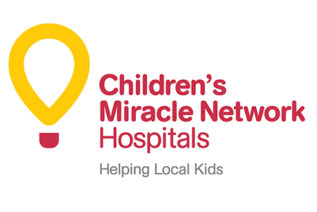
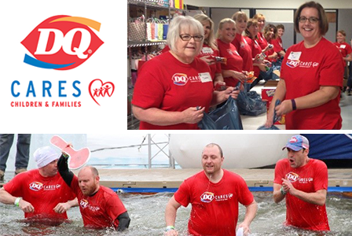

The DQ system has always been a place for kids and their families. Whether visiting after a baseball game, to celebrate a good report card, or simply to spend time as a family enjoying our famous soft-serve treats. Unfortunately, we know there are millions of kids each year who are unable to experience those basic joys due to being sick or injured and undergoing treatment or care at a children’s hospital. This is why the DQ system has been a proud partner of Children’s Miracle Network Hospitals (CMNH) for more than 30 years. This incredible network of children’s hospitals helps millions of kids each year get back to being kids and every year local DQ franchisees across the U.S. and Canada rally together to raise funds that ensure these hospitals have what they need continue their great work.

Enim nec dui nunc mattis enim ut tellus elementum sagittis. Velit scelerisque in dictum non. Varius sit amet mattis vulputate enim nulla aliquet porttitor lacus. Phasellus egestas tellus rutrum tellus pellentesque. Diam quis enim lobortis scelerisque fermentum dui faucibus. Suspendisse in est ante in nibh. Ut morbi tincidunt augue interdum. Interdum varius sit amet mattis. Diam maecenas ultricies mi eget mauris pharetra et ultrices neque. Ornare suspendisse sed nisi lacus. Enim nec dui nunc mattis. Pellentesque habitant morbi tristique senectus et netus. Viverra vitae congue eu consequat ac felis donec et. Eget sit amet tellus cras adipiscing enim eu. Proin sagittis nisl rhoncus mattis. Consequat mauris nunc congue nisi vitae suscipit tellus mauris a. Pellentesque adipiscing commodo elit at imperdiet dui accumsan sit. Malesuada pellentesque elit eget gravida cum. Semper quis lectus nulla at volutpat diam. Morbi non arcu risus quis varius quam quisque.

Children’s Miracle Network Hospitals® (CMNH) raises funds and awareness for 170 member hospitals that provide 32 million treatments each year to kids across the U.S. and Canada. Donations stay local to fund critical treatments and healthcare services, pediatric medical equipment and charitable care. Its various fundraising partners and programs support the nonprofit’s mission to save and improve the lives of as many children as possible. The DQ® system, led by its passionate franchisees, has been proud partners with CMNH since 1984 raising more than $135 million in that time.

Each year, International Dairy Queen’s charitable arm, DQ Cares, provides support to non-profit organizations in our local community, the Twin Cities of Minneapolis and St. Paul. Through financial grants, volunteer efforts, and employee contributions we strive to help children and families that need it most in our community.
In 2017 the DQ Cares program will provide DQ product (Dilly® Bars) to Minnesota-based 501(c)3 organizations that help kids and families who need it most in the Twin Cities that have not already been served through financial grants.
Timeline
Applications accepted via email between January 30 and December 16, 2017.
If your organization fits the criteria and requirements included in the application below, we welcome you to fill out an application for 2017 available grants. Your organization will receive a response within two weeks of receipt.
DQ Cares Product Grant Application and information
PDF (652KB)
Word (1.1MB)
All questions about the DQ Corporate Giving Program should be directed to DQ Fan Relations at (866) 793-7582.